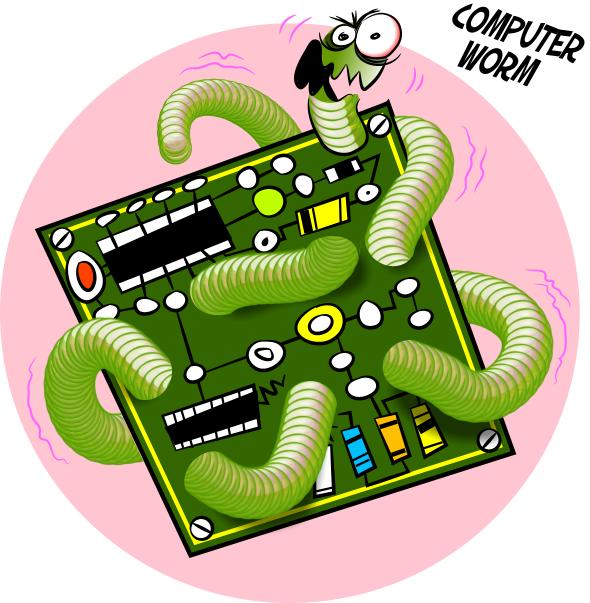

Un worm (letteralmente "verme") E' una particolare categoria di malware in grado di autoreplicarsi. simile ad un virus ma, a differenza di questo,
non necessita di legarsi ad altri eseguibili per diffondersi ma si diffonde spedendosi direttamente agli altri computer,
ad esempio tramite e-mail o una rete di computer.
Tipicamente un worm modifica il computer che infetta, in modo da venire eseguito ogni volta che si avvia la macchina e
rimanere attivo finche' non si spegne il computer o non si arresta il processo corrispondente.
Il worm tenta di replicarsi sfruttando Internet in diverse maniere: spesso i mezzi di diffusione sono piu' di uno per uno stesso
worm.

Il mezzo piu' comune impiegato dai worm per diffondersi e' la posta elettronica: il programma maligno ricerca indirizzi e-mail
memorizzati nel computer ospite ed invia una copia di se stesso come file allegato a tutti o parte degli indirizzi
che e' riuscito a raccogliere. I messaggi contenenti il worm utilizzano spesso tecniche di social engineering per indurre il
destinatario ad aprire l'allegato, che spesso ha un nome che permette al worm di camuffarsi come file non eseguibile.
Alcuni worm sfruttano dei bug di client di posta molto diffusi, come Microsoft Outlook Express, per eseguirsi automaticamente
al momento della visualizzazione del messaggio e-mail. Tutti i worm piu' recenti effettuano la falsificazione dell'indirizzo
mittente, creando un fastidioso effetto collaterale di proliferazione di messaggi: alcuni software antivirus, montati tipicamente
sui server, respingono il messaggio infetto e notificano il fatto al mittente, ma dato che questo e' falso tale notifica arriva ad
un destinatario diverso da chi ha realmente inviato la mail e che nulla ha a che fare con l'invio del worm.
Questi eseguibili maligni possono anche sfruttare i circuiti del file sharing per diffondersi. In questo caso si copiano tra i file
condivisi dall'utente vittima, spacciandosi per programmi ambiti o per crack di programmi molto costosi o ricercati, in modo
da indurre altri utenti a scaricarlo ed eseguirlo.
La tipologia forse piu' subdola di worm sfrutta dei bug di alcuni software o sistemi operativi, in modo da diffondersi
automaticamente a tutti i computer vulnerabili connessi in rete.